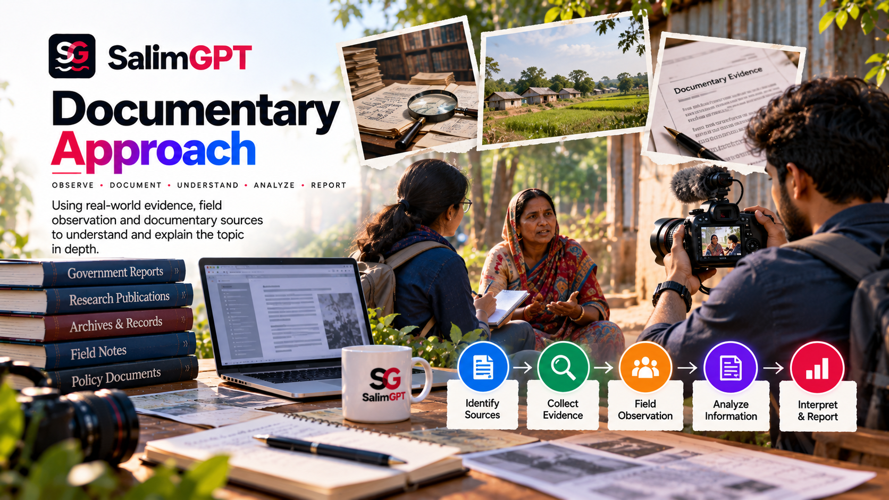
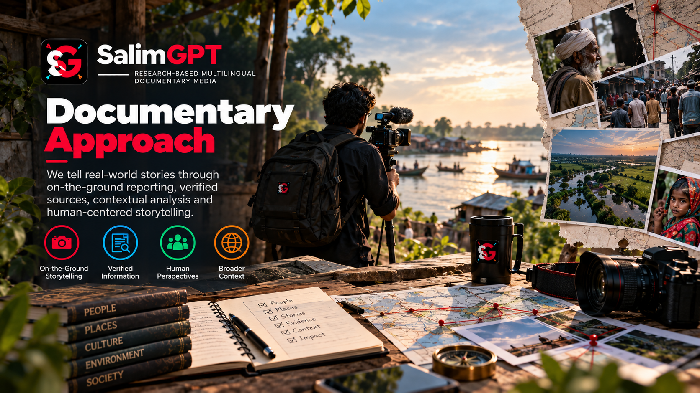

Research Before Narrative
The documentary direction should emerge from research rather than forcing evidence into a predetermined story.
HOW WE WORK
SalimGPT approaches documentary work as a research, evidence and storytelling process in which technology can assist production while human editorial judgment remains responsible for what is ultimately published.
The approach is not built around automated content generation. It is built around research questions, source assessment, context, narrative development, human review and final editorial approval.

THE APPROACH
A documentary can begin with a question, event, place, person, system, historical development, scientific issue, social phenomenon or other researchable subject. The first task is to determine what needs to be understood and what evidence is required.
Production decisions should follow the needs of the subject. The narrative, visuals, language, pacing and supporting media are developed around the research rather than being used to replace it.
This allows documentary work to remain flexible across different topics while maintaining a consistent editorial principle: investigate first, develop the story from evidence and review before publication.
DOCUMENTARY FOUNDATIONS
These principles help connect research, production, creative decisions and editorial responsibility within a single workflow.
The documentary direction should emerge from research rather than forcing evidence into a predetermined story.
Individual facts and sources are considered alongside the wider context needed for audiences to understand their meaning and limitations.
Documentary storytelling should distinguish factual material from interpretation, inference, uncertainty or attributed viewpoints where that distinction matters.
Narrative structure and creative presentation can make research understandable, but they should not be used as substitutes for supporting evidence.
Research, scripts, visuals and other production outputs require human review before final publication decisions are made.
Relevant use of AI assistance, synthetic media, corrections and editorial processes can be explained through SalimGPT’s transparency and methodology pages.
FROM QUESTION TO DOCUMENTARY
The exact workflow can vary by subject, but the core sequence keeps research and human decisions ahead of final publication.
Identify what the documentary is trying to understand, explain, investigate or place into context.
Locate useful material, compare sources, identify missing information and build the factual foundation needed for the documentary.
Consider source quality, corroboration, conflicting accounts, limitations and areas where certainty is not justified.
Organize the research into a narrative that can help audiences follow the subject without changing the underlying meaning of the evidence.
Create or assemble the media needed to support the documentary while keeping the research and editorial purpose in control of production choices.
Review factual claims, source use, language, interpretation, visuals and other elements before approval.
Final publication remains a human editorial decision and can be distributed through the appropriate language edition and supported channels.

RESEARCH & EVIDENCE
Research can involve different source types depending on the subject. The purpose is not to collect the largest possible number of sources, but to identify material that meaningfully supports, challenges or contextualizes the documentary.
Source assessment also means recognizing limitations. Evidence can vary in reliability, relevance, completeness and proximity to the events or claims being examined.
When sources disagree or evidence remains uncertain, the documentary approach should preserve that distinction rather than presenting unsupported certainty.
Source & Evidence StandardsSTORYTELLING
Documentary storytelling requires selection, structure and presentation. Those creative decisions should improve understanding without changing what the evidence can reasonably support.
Organize information into a sequence that helps the audience understand relationships, chronology and context.
Avoid giving minor, weak or unsupported material more weight than the evidence justifies.
Use imagery and graphics to support understanding while avoiding presentation that creates a misleading factual impression.
Use clear wording while preserving distinctions between documented fact, interpretation, uncertainty and attributed claims.
HUMAN-LED, AI-ASSISTED
Artificial intelligence may assist selected tasks such as research organization, drafting, visual development, language and localization, synthetic media or other production activities where appropriate.
Human editorial responsibility remains separate from that assistance. Source verification, fact-checking, interpretation, creative direction, review and final publication approval remain human-led.
VISUAL DEVELOPMENT
Documentary visuals can include original media, licensed or permitted material, graphics, diagrams, archival material where available and appropriate synthetic or AI-assisted visual development.
The relevant question is not simply how a visual was produced. It is whether the visual accurately supports the documentary context and whether its use could create a misleading impression about what actually occurred.
Where synthetic or substantially altered media requires additional context for audiences, SalimGPT’s production and transparency standards provide the framework for handling that distinction.
MULTILINGUAL DOCUMENTARIES
SalimGPT uses dedicated language editions so documentary work can be presented within different language environments.
Translation or localization is not treated merely as word substitution. The objective is to preserve factual meaning, context and important distinctions while making the documentary understandable to the relevant audience.
SUBJECT SCOPE
SalimGPT uses topic gateways to organize discovery, but those gateways do not determine what can or cannot become a documentary subject.
These topics are discovery gateways. Documentary subjects may also be niche, local, interdisciplinary, emerging, unusual or highly specific when they can be responsibly researched.
REVIEW DOES NOT END AT PUBLICATION
Publication is the end of a production cycle, not a claim that information can never change. New evidence, factual errors, context problems or production issues may require review after publication.
SalimGPT maintains separate correction and update guidance so identified issues can be examined through a human editorial process.
HOW WE WORK
How research supports documentary development.
How evidence and source quality are considered.
How documentary claims are reviewed before publication.
Principles guiding review and publication decisions.
How research, production and editorial review connect.
How AI assistance is separated from editorial authority.